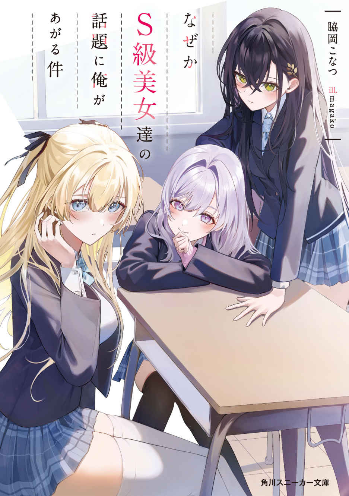

Naze ka S-kyuu Bijo-tachi no Wadai ni Ore ga Agaru ken
Novel Info's
Status: Ongoing
Genre: Comedy, Harem, Romance, Slice of Life
Author: Konatsu Wakioka
Illustrator: Magako
Volumes: 2
Original Publisher: N/A
English Publisher: N/A
Fan Translation: Van Halen
Description/Sypnosis
“Actually, I had a life-changing encounter that will greatly affect my future.”
Sara Himekawa, Rin Kohinata, and Yumena Takamori are high school girls known as the ‘S-class beauties.’
While the class is filled with envy-inducing love stories, there’s Haruya Akasaki, the quietest guy in class.
In fact, the guy they’re talking about is Haruya Akasaki!!
A romantic school harem comedy about a shy boy and the ‘S-class beauties’ has begun.”
Download Links
Epub & Pdf